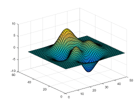
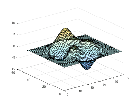

Add Transparency to Graphics Objects
What Is Transparency?
The transparency of a graphics object determines the degree to which you can see through it. Add transparency to graphics objects to customize the look of your charts or reveal details about an object that are otherwise hidden. This table shows the difference between an opaque and semitransparent surface.
| Opaque Object | Semitransparent Object |
|---|---|
|
 |
 |
Graphics Objects that Support Transparency
Control the transparency of an object using the alpha function or by setting properties of the object related to transparency. Some graphics objects support using a different transparency value for the faces versus the edges of the object.
This table lists the objects that support transparency and the corresponding properties. Set the properties to a scalar value in the range [0,1]. A value of 0 means completely transparent, a value of 1 means completely opaque, and values between 0 and 1 are semitransparent.
| Graphics Objects that Support Transparency | Properties for Uniform Transparency |
|---|---|
| Area | FaceAlphaEdgeAlpha |
| Bar series | FaceAlphaEdgeAlpha |
| Scatter series | MarkerFaceAlphaMarkerEdgeAlpha |
| BubbleChart series | MarkerFaceAlphaMarkerEdgeAlpha |
| Histogram | FaceAlpha |
| Histogram2 | FaceAlpha |
| Chart surface | FaceAlphaEdgeAlpha |
| Primitive surface | FaceAlphaEdgeAlpha |
| Patch | FaceAlphaEdgeAlpha |
| Image | AlphaData |
Tip
Patch, surface, scatter, and image objects support using alpha data to vary the transparency across the object. For more information, see Vary Transparency Using Alpha Data.
Create Area Chart with Transparency
Combine two semitransparent area charts by setting the FaceAlpha and EdgeAlpha properties for each area object.
x = linspace(0,10); y1 = 4 + sin(x).*exp(0.1*x); area(x,y1,'FaceColor','b','FaceAlpha',.3,'EdgeAlpha',.3) y2 = 4 + cos(x).*exp(0.1*x); hold on area(x,y2,'FaceColor','r','FaceAlpha',.3,'EdgeAlpha',.3) hold off

Create Bar Chart with Transparency
Create a semitransparent bar chart by setting the FaceAlpha property of the bar series object to a value between 0 and 1. Display the grid lines.
month = 1:5; sales = [10 25 85 35 16]; bar(month,sales,'FaceAlpha',.5) grid on

Create Scatter Chart with Transparency
Create a scatter plot using blue, semitransparent markers. Then, add a second scatter plot using red, semitransparent markers. Specify the marker color by setting the MarkerFaceColor and MarkerEdgeColor properties of the scatter series object. Specify the transparency by setting the MarkerFaceAlpha and MarkerEdgeAlpha properties to a scalar value between 0 and 1.
x = [5 10 11 13 18]; y1 = [40 80 150 80 50]; a1 = 100*[100 50 80 30 50]; scatter(x,y1,a1,'MarkerFaceColor','b','MarkerEdgeColor','b',... 'MarkerFaceAlpha',.2,'MarkerEdgeAlpha',.2) axis([0 20 0 200]) x = [2 6 8 11 13]; y2 = [30 40 100 60 140]; a2 = 100*[30 50 30 80 80]; hold on scatter(x,y2,a2,'MarkerFaceColor','r','MarkerEdgeColor','r',... 'MarkerFaceAlpha',.2,'MarkerEdgeAlpha',.2) hold off

Vary Transparency Using Alpha Data
Patch, surface, and image objects have a few additional properties for varying the transparency across the object.
Images — Specify a different transparency value for each image element. Specify the values by setting the
AlphaDataproperty to an array the same size as theCDataproperty.Chart and primitive surfaces — Specify a different transparency value for each face and edge. Additionally, you can specify whether to use flat or interpolated transparency across each face or edge. First, specify the transparency values by setting the
AlphaDataproperty to an array the same size as theZDataproperty. Then, specify flat or interpolated transparency by setting theFaceAlphaandEdgeAlphaproperties to either'flat'or'interp'.Patches — Specify a different transparency value for each face and edge. Additionally, you can specify whether to use flat or interpolated transparency across each face or edge. First, specify the transparency values by setting the
FaceVertexAlphaDataproperty to a column vector with length equal to either the number of faces (for flat transparency) or the number of vertices in the patch (for interpolated transparency). Then, specify flat or interpolated transparency by setting theFaceAlphaandEdgeAlphaproperties to either'flat'or'interp'.Scatter plots — Specify a different transparency value for each marker. First, specify the transparency values by setting the
AlphaDataproperty to an array the same size as theXDataproperty. Then, specify flat transparency by setting either theMarkerFaceAlphaorMarkerEdgeAlphaproperty to'flat'.
Use the AlphaDataMapping property to control how the objects interpret the alpha data values. See the property descriptions for more details.
Vary Surface Chart Transparency
Create a surface and vary the transparency based on the gradient of the z data. Use a flat transparency across each surface face by setting the FaceAlpha to 'flat'. Set the surface color to blue to show how the transparency varies.
[x,y] = meshgrid(-2:.2:2); z = x.*exp(-x.^2-y.^2); a = gradient(z); surf(x,y,z,'AlphaData',a,... 'FaceAlpha','flat',... 'FaceColor','blue')

Vary Patch Object Transparency
Plot a line using the patch function. Set the last entry of y to NaN so that patch creates a line instead of a closed polygon.
Define one transparency value per vertex by setting the FaceVertexAlphaData property to a column vector. Interpret the values as transparency values (0 is invisible, 1 is opaque) by setting the AlphaDataMapping property to 'none'. Interpolate the transparency between vertices by setting the EdgeAlpha property to 'interp'.
x = linspace(1,10,10); y = sin(x); y(end) = NaN; figure alpha_values = linspace(0,1,10)'; patch(x,y,'red','EdgeColor','red',... 'FaceVertexAlphaData',alpha_values,'AlphaDataMapping','none',... 'EdgeAlpha','interp')

See Also
alpha | alphamap | alim | scatter | bar | image | surf | patch | area